Um componente React simples que renderiza uma lista de tarefas e permite adicionar novas tarefas: Conceitos Demonstrados:
* Uso de Hooks (useState) para gerenciar o estado do componente.
* Renderização de listas e controle de formulário.
* Manipulação de eventos de entrada.
Node.js para Iniciantes
Node.js é um runtime JavaScript construído com o motor de JavaScript V8 do Chrome...
Um servidor HTTP simples em Node.js que responde com "Hello, World!" para todas as requisições: Conceitos Demonstrados:
* Criação de um servidor HTTP básico.
* Manipulação de requisições e respostas.
* Manipulação de eventos de entrada.
Por que escolher TypeScript?
TypeScript é uma linguagem de programação fortemente tipada que se baseia em JavaScript...
Um exemplo de função TypeScript que calcula a soma de dois números e usa tipagem explícita: Conceitos Demonstrados:
* Definição de tipos para parâmetros e retorno de função.
* Uso da tipagem estática para evitar erros em tempo de desenvolvimento.
Api Restfull com Java
APIs RESTful usando Java, destacando conceitos essenciais, arquitetura, ferramentas, e um breve exemplo de como implementar uma API RESTful com o framework Spring Boot
Exemplo de Projeto: Vamos criar um exemplo de uma API RESTful usando Java com o framework Spring Boot, que é uma das escolhas mais populares para construir APIs em Java devido à sua simplicidade e rapidez de desenvolvimento. Configurando o Projeto Spring Boot
Você pode criar um projeto Spring Boot usando o Spring Initializr (https://start.spring.io/), configurando as seguintes dependências:
Spring Web (para suporte ao desenvolvimento web e RESTful).
Spring Data JPA (para integração com banco de dados).
H2 Database (um banco de dados em memória para fins de demonstração).
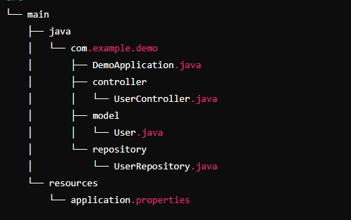
Descrição da imagem 1: Estrutura basica do projeto.
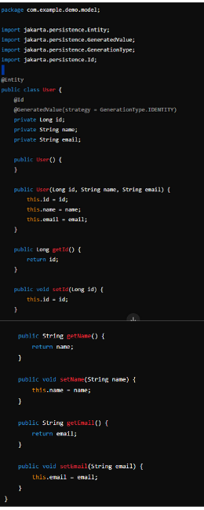
Descrição da imagem 2: Vamos criar uma entidade simples chamada User que representará os dados de um usuário no banco de dados.
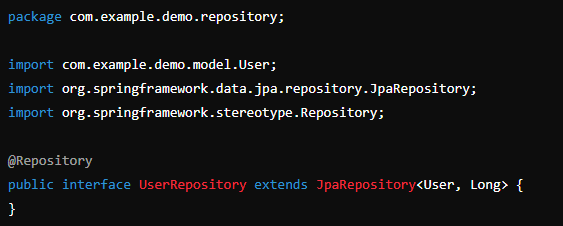
Descrição da imagem 3: Vamos criar um repositório que permitirá operações CRUD na entidade User.
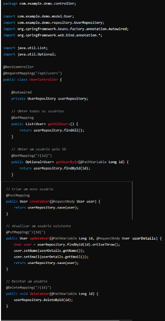
Descrição da imagem 4: Agora, vamos criar o controlador REST (UserController) que terá os endpoints para as operações CRUD.
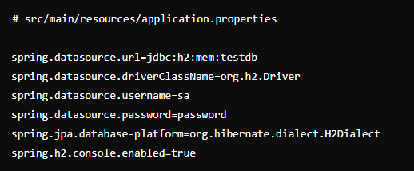
Descrição da imagem 5: Adicione a configuração do banco de dados H2 ao arquivo application.properties para persistência de dados em memória:
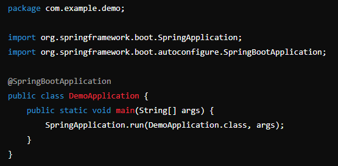
Descrição da imagem 6: Execute o método main da classe DemoApplication para iniciar o servidor. A aplicação será iniciada na porta padrão 8080.
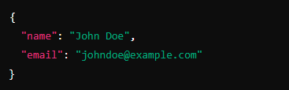
Descrição da imagem 7: Agora você pode testar a API usando ferramentas como Postman ou cURL.
Obter todos os usuários: GET http://localhost:8080/api/users
Obter um usuário pelo ID: GET http://localhost:8080/api/users/{id}
Criar um novo usuário: POST http://localhost:8080/api/users com um corpo JSON como na foto:
Este exemplo cobre a criação de uma API RESTful básica usando Java com Spring Boot, demonstrando como configurar uma aplicação para realizar operações CRUD com persistência de dados em um banco de dados em memória. Essa estrutura pode ser expandida e personalizada para atender a casos de uso mais complexos em desenvolvimento de software empresarial.
Linguagem de Programaçãp JavaScript
JavaScript é uma linguagem de programação de alto nível, interpretada e dinâmica, que é amplamente utilizada para criar e controlar conteúdo dinâmico em websites. Ela foi originalmente desenvolvida pela Netscape em 1995 para adicionar comportamento dinâmico às páginas da web e evoluiu ao longo dos anos para se tornar uma das linguagens de programação mais populares do mundo, suportada por todos os navegadores modernos.
Vamos criar um exemplo de projeto em JavaScript: um aplicativo simples de To-Do List. Este aplicativo permitirá que o usuário adicione, remova e marque tarefas como concluídas. Usaremos HTML, CSS, e JavaScript puro para criar este projeto. Estrutura do Projeto
O projeto será composto pelos seguintes arquivos:
index.html: O arquivo HTML que contém a estrutura da página.
styles.css: O arquivo CSS que contém os estilos para a página.
script.js: O arquivo JavaScript que contém a lógica para o aplicativo de To-Do List.
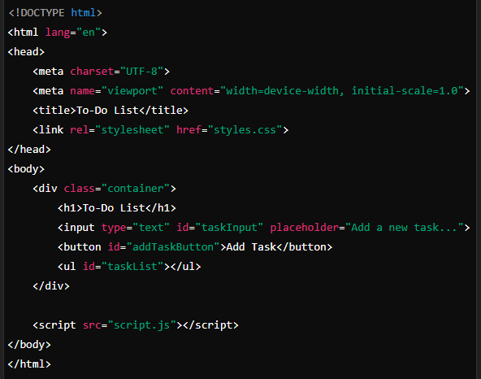
descrição da imagem 1: index.html
Este arquivo HTML cria a estrutura básica da página web e inclui os links para o arquivo CSS e o arquivo JavaScript.
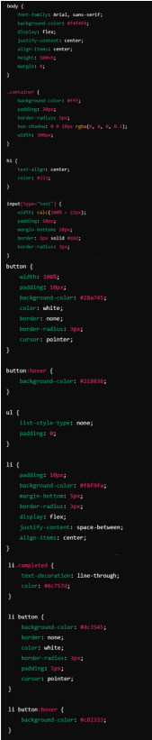
Descrição da imagem 2: styles.css:
Este arquivo CSS define o estilo para o aplicativo de To-Do List, incluindo o layout, cores, e estilização dos elementos.
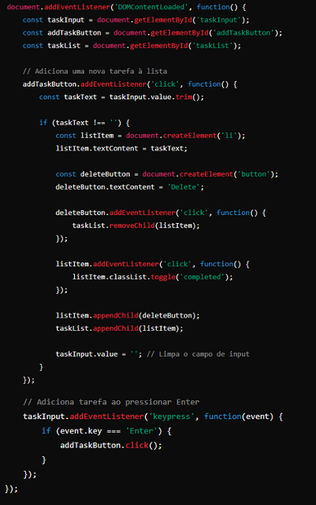
Descrição da imagem 3: script.js
Este arquivo JavaScript contém a lógica principal para o funcionamento da To-Do List. Ele inclui funcionalidades para adicionar, remover, e marcar tarefas como concluídas.
Explicação do Código
HTML (index.html):
Contém um campo de entrada de texto para adicionar novas tarefas e um botão para adicionar a tarefa à lista.
A lista de tarefas é exibida usando um elemento não ordenado.
CSS (styles.css):
Estilos básicos são aplicados ao corpo, container principal, input, botão e lista de tarefas.
Usamos seletores para estilizar tarefas concluídas (marcadas como completas) com um estilo diferente.
JavaScript (script.js):
Ao carregar a página (DOMContentLoaded), configuramos os manipuladores de eventos para o botão de adicionar tarefa e a entrada de texto.
O botão "Add Task" adiciona uma nova tarefa à lista quando clicado.
Cada tarefa pode ser removida usando um botão "Delete" gerado dinamicamente.
Ao clicar em uma tarefa, ela é marcada ou desmarcada como concluída (estilo riscado).
Como Executar o Projeto
Crie uma pasta no seu computador chamada todo-list.
Crie os arquivos index.html, styles.css, e script.js na pasta.
Copie e cole o código acima nos respectivos arquivos.
Abra o arquivo index.html no seu navegador preferido.
Agora você tem um aplicativo de To-Do List funcional construído com JavaScript puro!
Conclusão
Este exemplo de projeto demonstra como construir um aplicativo interativo básico usando JavaScript, HTML e CSS. É uma excelente base para aprender sobre manipulação do DOM, gerenciamento de eventos, e desenvolvimento web front-end em geral. A partir deste ponto, você pode expandir o projeto adicionando recursos como armazenamento local, filtros de tarefas ou uma interface mais avançada!
Programação Mobile com React Native
React Native é um framework de código aberto desenvolvido pelo Facebook que permite criar aplicativos móveis usando JavaScript e React. Ele possibilita o desenvolvimento de aplicativos para iOS, Android e outras plataformas utilizando uma base de código única. Ao invés de utilizar componentes nativos escritos em Java, Kotlin, Swift, ou Objective-C, o React Native permite que desenvolvedores usem JavaScript para criar componentes que são então traduzidos para os componentes nativos da plataforma.
Pré-requisitos
Node.js: Certifique-se de que o Node.js esteja instalado. Você pode verificar se está instalado executando node -v no terminal.
React Native CLI: Instale o React Native CLI globalmente se ainda não o tiver:
npm install -g react-native-cli
Ambiente de Desenvolvimento: Instale o ambiente necessário para React Native para Android e iOS. Para iOS, você precisará de um Mac com Xcode instalado.
2. Criando o Projeto
No terminal, crie um novo projeto React Native:
npx react-native init TodoApp
Isso criará uma nova pasta chamada TodoApp com a estrutura básica do projeto React Native.
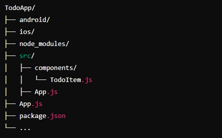
descrição da imagem 1: Estrutura do Projeto:
Dentro do diretório do projeto, a estrutura será semelhante a imagem acima:
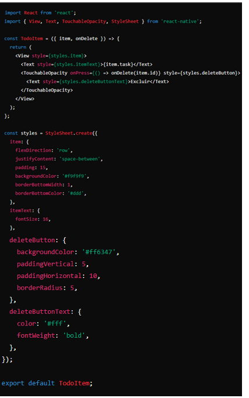
Descrição da imagem 2: Implementação do Projeto
Criando o Componente TodoItem
Crie um componente chamado TodoItem.js dentro da pasta src/components para representar cada item da lista de tarefas.
src/components/TodoItem.js
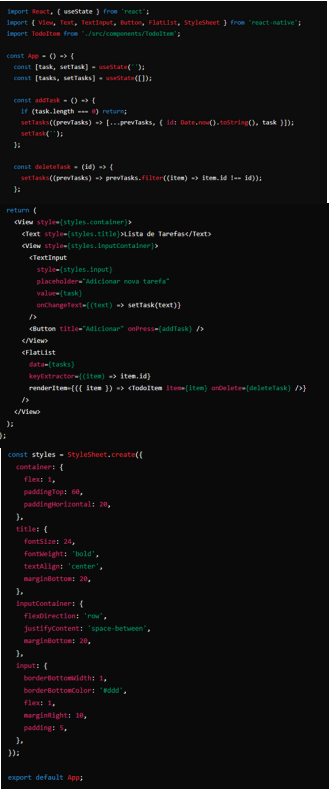
Descrição da imagem 3: Atualizando o Componente Principal App
Edite o arquivo App.js para adicionar a lógica da lista de tarefas e o gerenciamento de estado.
App.js.
Executando o Projeto
Para rodar o aplicativo no Android, use:
npx react-native run-android
Para rodar o aplicativo no iOS, use:
npx react-native run-ios
Explicação do Código
Gerenciamento de Estado: Utilizamos o hook useState para gerenciar o estado da tarefa atual (task) e da lista de tarefas (tasks).
Funções de Manipulação:
addTask: Adiciona uma nova tarefa à lista de tarefas.
deleteTask: Remove uma tarefa da lista de tarefas com base no id.
Componentização: O componente TodoItem é usado para representar cada tarefa na lista. Ele recebe as props item (a tarefa) e onDelete (função para excluir a tarefa).
Renderização de Lista: Utilizamos o componente FlatList para renderizar eficientemente uma lista de tarefas, especialmente para listas de tamanho dinâmico.
Conclusão
Este exemplo básico mostra como criar uma aplicação simples de lista de tarefas com React Native, abordando conceitos fundamentais como estado, props, componentes, e manipulação de listas. A partir daqui, você pode expandir o projeto adicionando funcionalidades como edição de tarefas, categorização de tarefas, e integração com armazenamento local ou remoto para persistência de dados.